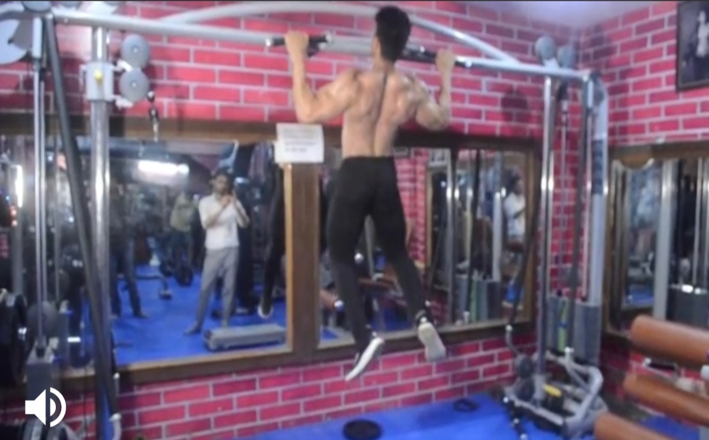
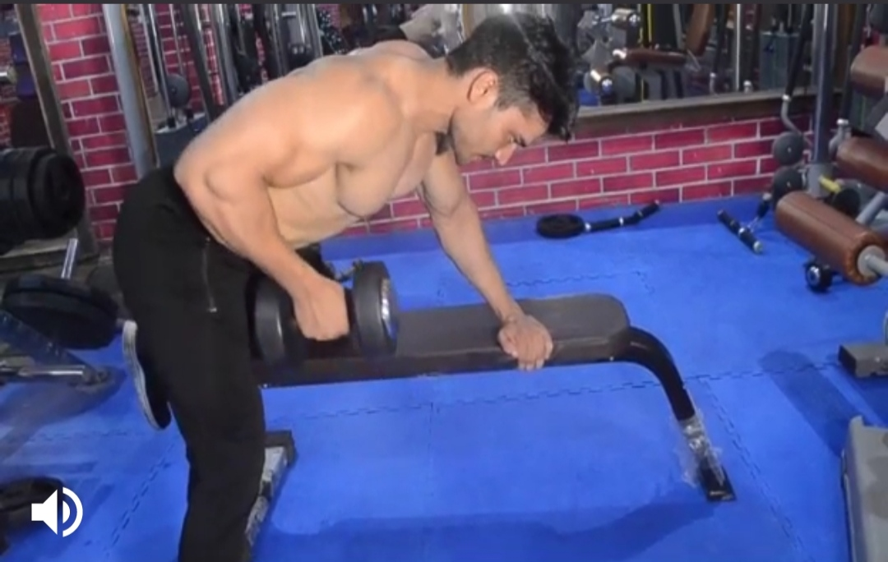
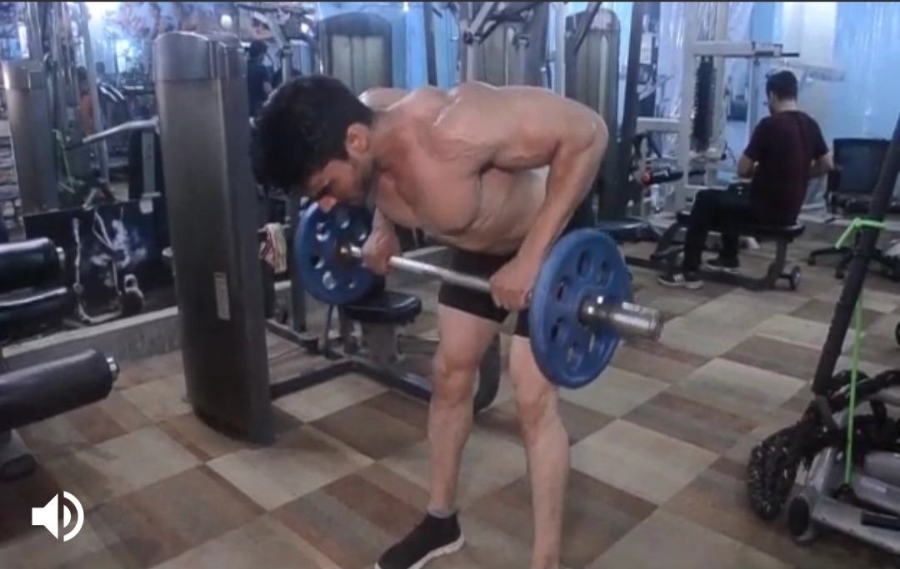
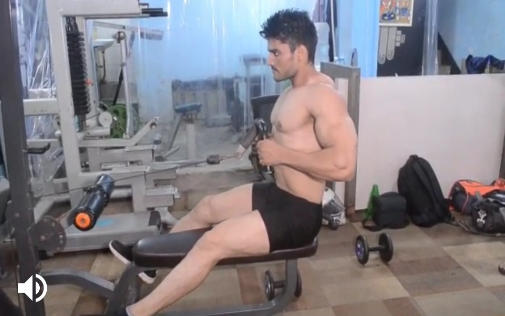
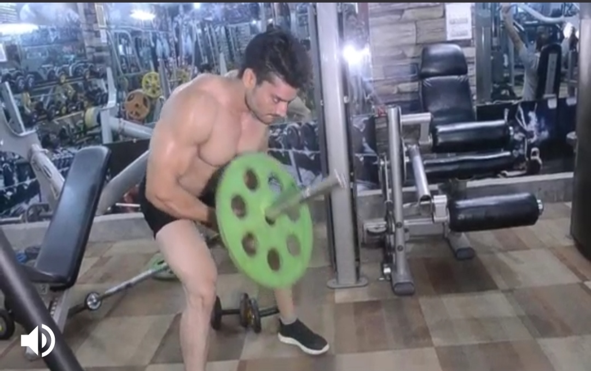

Chinups
Body Parts:Back
Description:
1) Grab The Bar. Grip it about shoulder-width apart. Full grip with your palms down.
2) Hang. Raise your feet off the floor by bending your knees. Hang with straight arms.
3) Pull. Pull yourself up by pulling your elbows down to the floor. Keep your elbows close.
4) Pass The bar. Pull yourself all the way up until your chin passes the bar. Don't do half reps.
5) Repeat. Lower yourself all the way down until your arms are straight. Breathe. Pullup again.
-----------------------------------------------------------------------------------------------------------------------------------------------------------------


Hanging Dumbbell Rows
Body part:Back
Description
1) Take a dumbbell in your hand and let the weight hang down below you,
feeling the serratus muscles stretch to their maximum when performing the hanging dumbbell rows exercise.
2) Concentrating on using the serratus muscles in isolation as much as possible, lift the dumbbell up in front of you.
3) As you lift, your elbows come toward the front, no out to the side.
4) Hold at the point of maximum serratus contraction, then lower the dumbbells slowly back to the starting position, feeling the serratus muscles stretch once more.
During the hanging dumbbell rows movement, be sure to keep your elbows and the dumbbells as close to your body as possible.
---------------------------------------------------------------------------------------------------------------------------------------------------------------------------------------


Barbell Bent Over Row
Body part:Back
Description
1) Walk to the bar. Stand with your mid-foot under the bar. Don't touch it with your shins. Medium stance, toes pointing out.
2) Grab the bar, use a medium grip width. Narrower than on Bench Press, wider than on Deadlifts. Hold the bar low in your hands.
3) Unlock your knees, Keep your hips higher than on the Deadlift. Bend your knees but keep them back so the bar can't hit them.
4) Lift your chest, straighten your back, don't move the bar. Don't drop your hips. Don't squeeze your shoulder-blades together.
5) Row: Take a big breath,hold it and pull the bar against your lower chest. Lead with your elbows and pull them towards the ceiling.
-------------------------------------------------------------------------------------------------------------------------------------------------------------------------------


Seated Rows
Body parts:Back
Description
1) Sit down on the machine and place your feet on the front platform or crossbar provided making sure that your knees are slightly bent and not locked.
2) Lean over as you keep the natural alignment of your back and grab the V-bar handles.
3) With your arms extended pull back until your torso is at a 90-degree angle from your legs.
Your back should be slightly arched and your chest should be sticking out. You should be feeling a nice stretch on your lats as you hold the bar in front of you.
This is the starting position of the exercise.
4) Keeping the torso stationary, pull the handles back towards your torso while keeping the arms close to it until you touch the abdominals. Breathe out as you perform that movement.
At that point you should be squeezing your back muscles hard. Hold that contraction for a second and slowly go back to the original position while breathing in
-------------------------------------------------------------------------------------------------------------------------------------------------------------------------------------------


T-Bar Bent Over Row
Body part:Back
Description
1) Place the end of an empty barbell into the corner of a room.
2) Rest a heavy dumbbell or some weight plates on it to hold it down.
3) Load the opposite end of the bar with plates and straddle it.
4) Bend over at the hips until your torso is about a 45-degree angle to the floor with arms extended.
5) Hook a V-grip handle (the kind you see at a cable station) under the bar and hold with both hands.
6) Keeping your lower back in its natural arch, squeeze your shoulder blades together and pull the bar until the plates touch your chest.